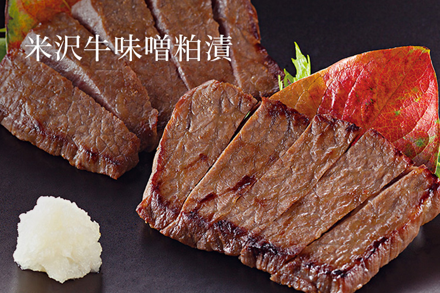
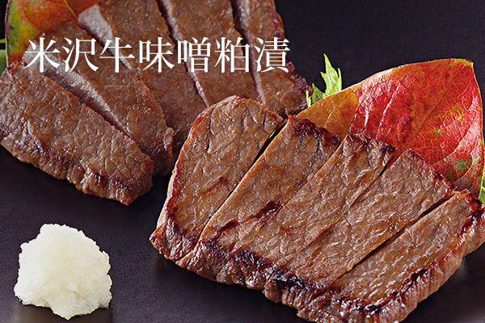
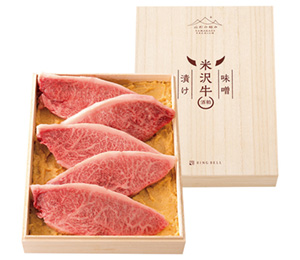
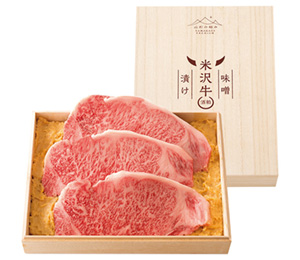

リンベルが日本一と認めた「極みの味」
山形が生んだ米沢牛味噌粕漬


ここが「極み」
- 山形の老舗酒蔵「寿虎屋酒造」の酒粕
- 牛肉と相性のいい「カクリキ」味噌
スタッフ＆お客様の声
お客様の声
- 上品な味でとても美味しい。脂も甘みがあってよいです。お肉はとても柔らかく、ペロッと食べれてしまいます。
- 30代 女性
- 酒粕と味噌の優しい香りを楽しめました。お肉が柔らかくてジューシー！
- 20代 女性
商品のこだわりポイント
厳選素材で漬け込んだ米沢牛のまろやかな味わい
寒暖差のある気候風土、最上川源域の豊かな水資源に恵まれた、山形県置賜地方で育てらた、まろやかで細かい霜降りが特徴の米沢牛を味噌粕漬にしました。
酒粕には老舗酒蔵『寿虎屋酒造』が酒造りの好適米「美山錦」で純米酒を搾った際の酒粕を。
味噌には『花角味噌醸造』がつくる山形県産のお米と大豆でできた麹味噌を使っています。
芳醇な酒粕、大豆の旨みと米麹のまろやかな味わいが、米沢牛に溶け込みます。
ご注文はこちら
-

-
